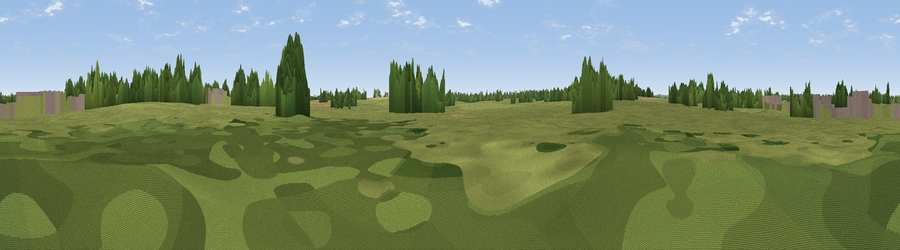

Rat Hill
#45389 in England · top 96% of its area beats it · near GrittletonThe view, rendered

A 360° render of this exact spot computed from the terrain model, tree cover and land cover — summer colours, afternoon light, calibrated against photographs of famous viewpoints. Real trees, hedges and buildings will differ in detail.
The panorama
Grey silhouette: terrain skyline in each direction (720 bearings, Earth curvature and refraction included). Dashed green: skyline with trees (+15 m) and buildings (+8 m) as obstacles. Blue strip: how far the ground is visible on each bearing.
Where the view opens
Wedge length = distance to the farthest visible ground on that bearing (vegetation-aware). Rings at 10, 25 and 50 km.
What fills the view
64% grassland · 24% cropland · 10% woodland · 2% built-up
Angular shares of the visible panorama (visual magnitude), not map area. Landscape diversity 0.40 (0–1 Shannon).
Key numbers
More beautiful places nearby
The staircase of upgrades: each row has a higher view potential than everything closer. Driving times are estimates from straight-line distance, calibrated against real road routing — check an actual route before setting out.
| Place | Direction | Drive | Score |
|---|---|---|---|
| Viewpoint near Castle Combe | SSW · 3 km | ~7 min | 39.3 |
| Lan Hill | SSE · 5 km | ~11 min | 48.5 |
| Viewpoint near Dodington | W · 10 km | ~19 min | 51.1 |
| Viewpoint near Old Sodbury | WNW · 10 km | ~20 min | 63.5 |
| Viewpoint near Horton | WNW · 11 km | ~20 min | 65.5 |
| Viewpoint near Hinton | W · 11 km | ~21 min | 65.9 |
| Viewpoint near Horton | NW · 11 km | ~21 min | 66.9 |
| Viewpoint near Wortley | NNW · 16 km | ~28 min | 67.8 |
51.50827, -2.20472 · source: osm peak · position refined by local search. Computed location — check access rights before visiting.